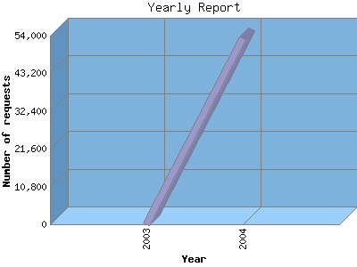

NPS Internet Solutions, Inc.
NPS Internet Solutions, Inc.
The Yearly Report shows total activity on your site for each calendar year.
Remember that each page hit can result in several server requests as the images
for each page are loaded.
Note: Most likely, the first and last years
will not represent a complete year's worth of data, resulting in lower hits.

| Year | Number of requests | Number of page requests | Number of bytes transferred | |
|---|---|---|---|---|
| 1. | 2003 | 111 | 39 | 2.182 MB |
| 2. | 2004 | 53,279 | 5,297 | 6.389 GB |
Most active year 2004 : 5,297 pages sent. 6,860,273,595.00 served. 53,279 requests handled.
Yearly average: 2,668 pages sent. 3.196 GB served. 26,695 requests handled.
This report was generated on August 16, 2004 03:59.
Report time frame December 30, 2003 01:23 to August 16, 2004 09:47.
| Web statistics report powered by: | |
|
NPS Internet Solutions, Inc.
|
|
| Web statistics report produced by: analog 5.32 / Report Magic 2.21 |